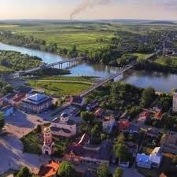

Га́лич — місто, засноване на відстані близько 5 км від зруйнованого давнього Галича, центру Галицько-Волинського князівства, наймогутнішої твердині на південно-західних давньоруських землях.
Ссылка на Googleanotehr link
Galych from wikipediatest image
another Galych photo
Galych very beautifull